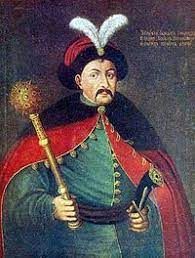
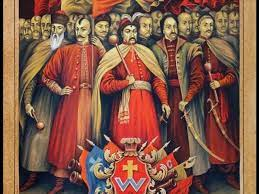
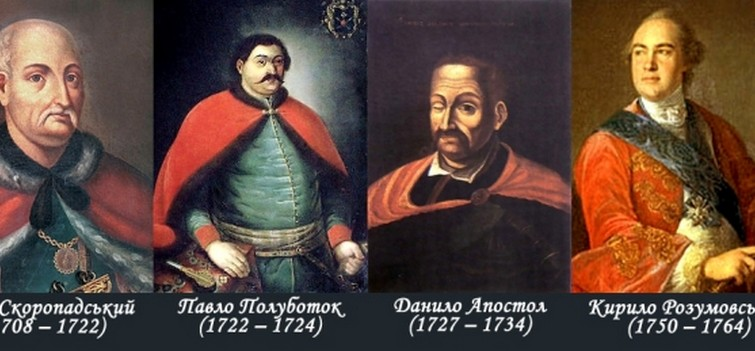

Історія гетьманів України охоплює період з XVI до XVIII століття, коли гетьман був виборним ватажком козацького війська і правителем держави, а найвизначнішими постатями були Богдан Хмельницький, Петро Дорошенко, Іван Мазепа та Кирило Розумовський, чиї правління ознаменувалися боротьбою за українську державність та утвердженням її інститутів. Починаючи як керівник реєстрових козаків, згодом гетьман став головою Війська Запорозького, а з 1648 року — правителем Гетьманщини, незалежної козацької держави, яка згодом потрапила під протекторат Російської імперії, що зрештою призвело до ліквідації інституту гетьманства.
Реєстрове козацтво:
У середині XVI століття в Речі Посполитій було створено реєстрове козацьке військо, яке отримувало платню за службу. На чолі цього війська стояв гетьман, який обирався козаками і затверджувався королем.
Перші гетьмани:
Серед перших видатних гетьманів, які не підпорядковувалися польській владі, були К. Косинський, С. Наливайко, а також Дмитро «Байда» Вишневецький, який збудував укріплення на острові Мала Хортиця, що вважається першим прототипом Запорозької Січі.
Богдан Хмельницький:
Повстання 1648 року під проводом Богдана Хмельницького. призвело до створення Української Козацької Держави, або Гетьманщини. Хмельницький став першим гетьманом незалежної козацької держави, яка мала власну систему управління.
Розкол держави:
Після Хмельницького державою керували різні гетьмани. Тривалий час існувало два гетьманства — на Правобережжі (П. Тетеря, П. Дорошенко) та на Лівобережжі (І. Виговський, Д. Ігнатович Многогрішний), що було свідченням розділу українських земель та пошуку шляхів до відновлення єдиної держави.
Вплив Росії:
Гетьманщина поступово потрапила під протекторат Російської імперії, що призвело до обмеження прав гетьманів. П. Скоропадський став останнім гетьманом, який ще зберігав значну владу, але після його смерті в 1722 році було створено Малоросійську колегію, яка почала керувати справами держави.

Ліквідація інституту:
У 1764 році, за часів правління Катерини II, було ліквідовано інститут гетьманства, а останнім гетьманом був Кирило Розумовський, який відіграв важливу роль у розвитку культури та освіти в Україні.
Спадок гетьманства:
Сьогодні в Україні титул гетьмана використовується деякими громадськими організаціями, які вважають себе спадкоємцями традицій українського козацтва. Список гетьманів україни
